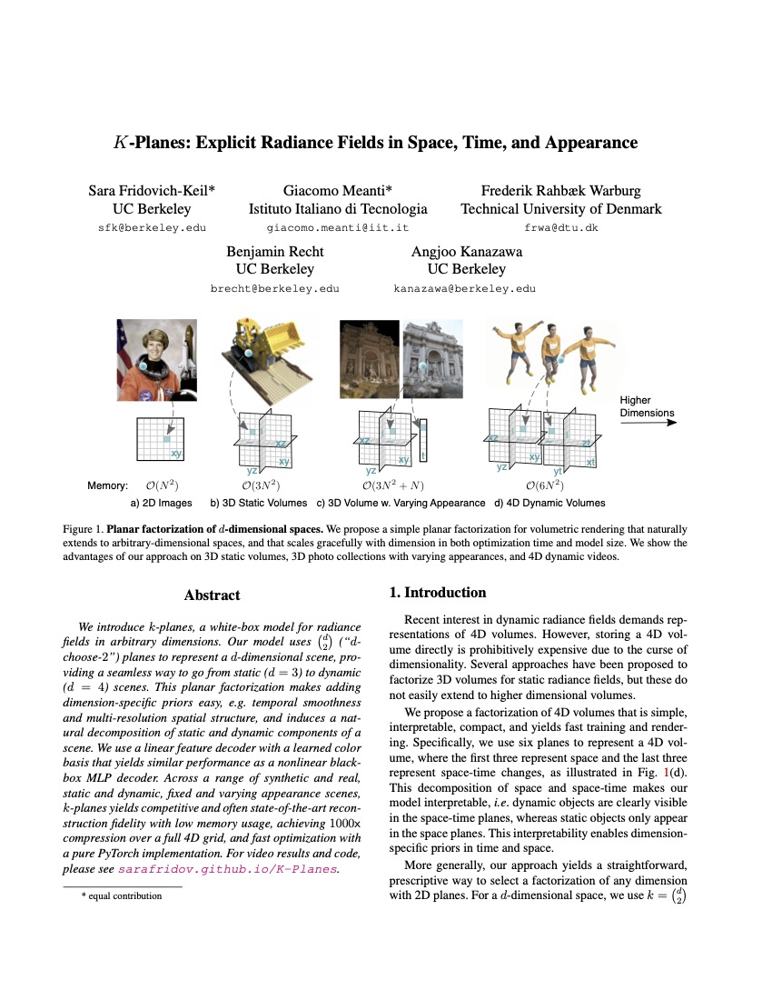
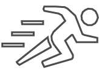

K-Planes
Explicit Radiance Fields in Space, Time, and Appearance
CVPR 2023
* Denotes Equal Contribution


* Denotes Equal Contribution
Abstract: We introduce k-planes, a white-box model for radiance fields in arbitrary dimensions. Our model uses d-choose-2 planes to represent a d-dimensional scene, providing a seamless way to go from static (d=3) to dynamic (d=4) scenes. This planar factorization makes adding dimension-specific priors easy, e.g. temporal smoothness and multi-resolution spatial structure, and induces a natural decomposition of static and dynamic components of a scene. We use a linear feature decoder with a learned color basis that yields similar performance as a nonlinear black-box MLP decoder. Across a range of synthetic and real, static and dynamic, fixed and varying appearance scenes, k-planes yields competitive and often state-of-the-art reconstruction fidelity with low memory usage, achieving 1000x compression over a full 4D grid, and fast optimization with a pure PyTorch implementation.
Method overview. (a) The k-plane representation decomposes 4D spatiotemporal volumes into six planes, three for space and three for spatiotemporal variations. To obtain the value of a 4D point \(\textbf{q}=(x,y,z,t)\), we first project the point into each plane (b) in which we do multiscale bilinear interpolation. (c) The interpolated values are multiplied and concatenated over \(S\) scales. (d) These features are decoded either with a small MLP or our explicit linear decoder. (e) We follow the standard volumetric rendering formula to predict color and density. The model is optimized by (f) minimizing the reconstruction loss with simple regularization in space and time.
(a) Hybrid model
(b) Explicit model
Novel view synthesis for 4D dynamic volumes. Both our explicit and hybrid models yield state-of-the-art reconstructions on real multi-view dynamic scenes.
Full
Space-only
Time-only
Space-time decomposition. K-planes naturally decomposes a 4D video into static and dynamic components. We render the static part by setting the time planes to the identity, and the remainder is the dynamic part. This makes adding dimension-specific priors easy.
(a) Hybrid model
(b) Explicit model
Novel view synthesis for 4D dynamic volumes. Reconstruction and novel view generation on a monocular teleporting-camera dataset of dynamic synthetic objects (the D-NeRF dataset). D-NeRF training data includes a single view per timestep, but the camera can “teleport” between adjacent timesteps. See "Monocular Dynamic View Synthesis: A Reality Check".
Full
Space-only
Time-only
Space-time decomposition. K-planes naturally decomposes a 4D video into static and dynamic components. We render the static part by setting the time planes to the identity, and the remainder is the dynamic part. This makes adding dimension-specific priors easy.
(a) Hybrid model
(b) Explicit model
Varying Appearance Phototourism Scenes. Like NeRF-W, we can interpolate our appearance code in either our explicit or hybrid model to alter the visual appearance of landmarks, such as changing time of day. Appearance codes affect color but not geometry; note that objects in the foreground appear and disappear as the camera moves past them.
Static forward facing scenes. Reconstruction and novel view generation on a dataset of forward facing captures (the LLFF dataset).
Static 360 scenes. Reconstruction and novel view generation on a dataset of synthetic objects (the NeRF dataset).
The day before our arxiv release, a similar paper Hexplanes was released on arxiv. Please consider checking out that paper as well: https://caoang327.github.io/HexPlane/
@inproceedings{kplanes_2023,
title={K-Planes: Explicit Radiance Fields in Space, Time, and Appearance},
author={Sara Fridovich-Keil and Giacomo Meanti and Frederik Rahbæk Warburg and Benjamin Recht and Angjoo Kanazawa},
year={2023},
booktitle={CVPR},
}
Many thanks to Matthew Tancik and Ruilong Li, and other members of KAIR for helpful discussion and pointers to resources. We also thank the DyNeRF authors for their response to our questions about their method. We also thank Joey Litalien for providing us with the framework for this website.
Detailed Drum Set ©bryanajones (CC BY 2.0)
Lego 856 Bulldozer ©Håvard Dalen (CC BY-NC 2.0)
D-NeRF dataset ©Alberto Pumarola
DyNeRF dataset (CC BY-NC 4.0)
Phototourism dataset (CC BY 2.0)